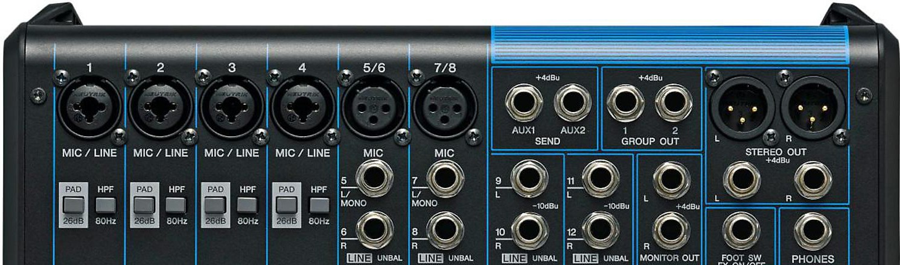
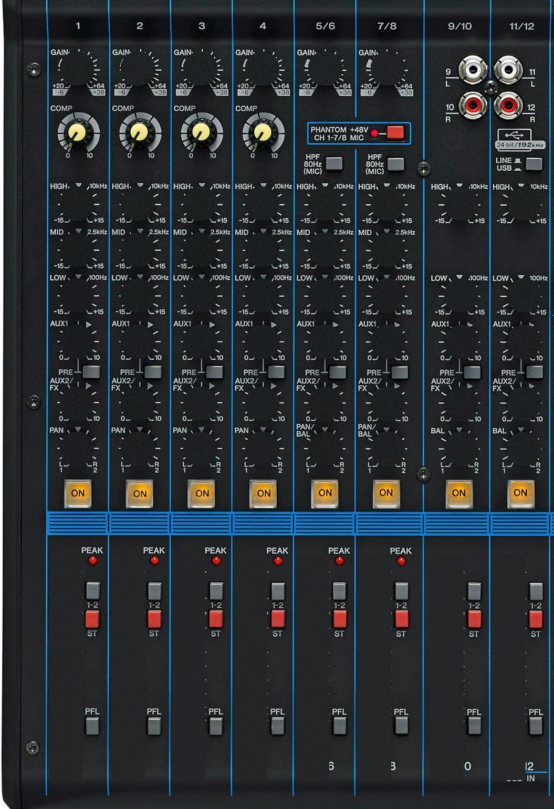
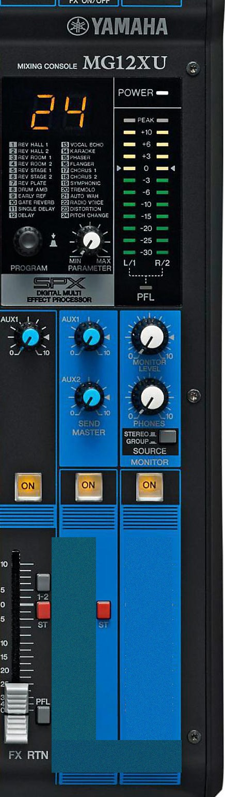

확성 시스템의 기본 구조 학습
음향 신호가 전달되는 대표적인 3가지 기본 경로를 이해하고 습득할 수 있습니다.
1) 마이크 ➔ 스피커
믹서나 앰프를 거치지 않고 마이크 신호가 직접 스피커(또는 액티브 스피커)로 입력되는 소규모 시스템 구조입니다.
2) 마이크 ➔ 콘솔 ➔ 앰프 ➔ 스피커
마이크 입력이 콘솔(믹서)에서 믹싱 및 프로세싱을 거친 후, 파워 앰프를 통해 증폭되어 패시브 스피커로 출력되는 가장 일반적인 교회 본당 음향 구조입니다.
3) 마이크 ➔ 콘솔 ➔ 스피커
콘솔에서 출력된 신호가 내장 앰프가 포함된 액티브(Powered) 스피커로 바로 전달되는 구조입니다.
🎚 실습 게임: MG12XU 콘솔로 음향 시스템 구축해보기
실제 페이더·EQ 조작은 현장에서 배우지만, "무엇을 어디에 연결해야 하는지"는 미리 게임으로 연습할 수 있습니다. 2단계를 순서대로 완료해보세요.
1단계 · 무대 위 소스를 실제 MG12XU 콘솔 채널에 연결하기
무대 위 아이콘의 노란 점(케이블 단자)을 눌러서 그대로 아래 입력 단자까지 드래그하면 실제 케이블처럼 연결됩니다 (아이콘을 먼저 누르고 채널 헤더를 눌러 연결해도 됩니다). 오른쪽 스피커도 STEREO/GROUP OUT 단자에서 드래그해 연결해야 소리가 납니다. 연결 후에는 GAIN·HIGH·MID·LOW·PAN·AUX1·AUX2 노브를 돌리고 페이더를 드래그하고, ON으로 뮤트, 1-2/ST로 버스 전송을 조절할 수 있어요. GAIN을 너무 올리면 PEAK 램프가 켜지고, 오른쪽 GROUP 1-2 / STEREO 마스터 페이더와 ON/OFF 버튼, 레벨 미터로 전체 출력을 관리합니다.
꺼짐 — 켜면 각 소스마다 테스트 톤이 재생되고, 페이더·GAIN·EQ·ON·라우팅 조작이 실시간으로 소리에 반영됩니다.



2단계 · 콘솔에서 스피커까지 출력 경로 연결하기
신호가 나가는 순서대로 블록을 눌러보세요.
3층 음향 시스템
장비를 드래그해 배치하고, 우측 하단의 파란색 핸들을 잡아당겨 원하는 카드만 개별적으로 크기(비율)를 조절해보세요! 장비를 클릭하면 케이블이 연결됩니다. 장비 왼쪽 위의 ℹ️ 아이콘을 누르면 그 장비가 무엇인지 설명을 볼 수 있어요.
🔌 케이블 모드: 첫 번째 장비를 터치하세요 (예: 콘솔 ➔ 스테이지박스)
앰프룸
단상
방송실
🎧 Ear Training (청음 및 밸런스 훈련)
핑크 노이즈 볼륨 트레이닝, 대역별 샘플 비교, 그리고 멀티트랙 멀티믹스 밸런스 채점 훈련을 진행할 수 있습니다.
🔊 볼륨 변화 트레이닝
+0 dB
먼저 🔵 기준(원본)을 듣고, 🟠 변화된 소리를 번갈아 들으며 비교한 뒤 몇 dB가 바뀌었는지 맞혀보세요!
🔒 ???
기준 대비 몇 dB 변했는지 골라보세요
🗣 대역별 오디오 샘플 비교 청취
1번부터 7번까지의 대역별 샘플 파일을 클릭하여 직접 비교 청취할 수 있습니다.
Sample(All) 원본 소스와 똑같은 밸런스가 되도록 개별 트랙 페이더를 맞춰보세요
멀티트랙 믹스 밸런스 맞추기
01
0.0
SOLO
MUTE
FIXED (0dB)
+10+50510203040∞
기준
02
-∞
SOLO
MUTE
LOCK
+10+50510203040∞
03
-∞
SOLO
MUTE
LOCK
+10+50510203040∞
04
-∞
SOLO
MUTE
LOCK
+10+50510203040∞
05
-∞
SOLO
MUTE
LOCK
+10+50510203040∞
06
-∞
SOLO
MUTE
LOCK
+10+50510203040∞
07
-∞
SOLO
MUTE
LOCK
+10+50510203040∞
08
-∞
SOLO
MUTE
LOCK
+10+50510203040∞
📅 사운드팀 신입 스텝 10주 커리큘럼
오리엔테이션 1주 + 모니터 스텝 4주 + 단상 스텝 2주 + 오퍼레이팅 교육 3주, 총 10주 과정입니다. 각 주차를 마치면 체크해서 진행 상황을 기록하세요. "이동" 버튼을 누르면 그 주차와 연계된 학습툴 탭으로 바로 이동합니다.
0 / 10주 완료